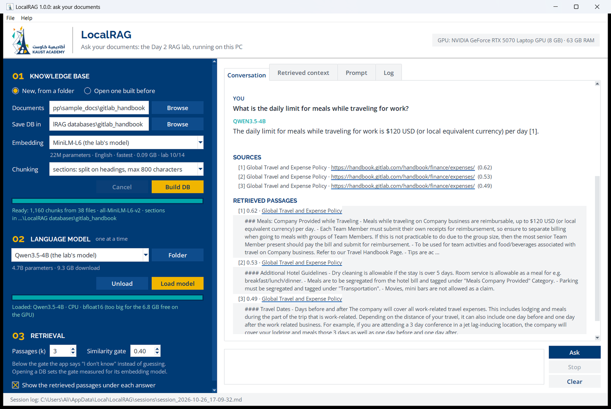
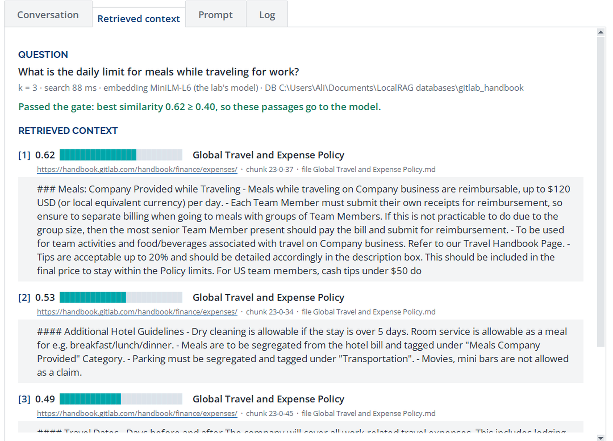

Turning a Python lab into a Windows program that people start with a double-click
Worked example: LocalRAG, the Day 2 RAG lab rebuilt as a desktop app (a folder of documents → a vector DB → cited answers from Qwen3.5-4B, every step logged) and packaged with PyInstaller.
01The whole process on one page
02How PyInstaller works
03Make your code freeze-friendly
04A clean build environment
05What PyInstaller cannot see
06Build, then test like your users
07Share it
08Troubleshooting
09Worked example: LocalRAG
AChecklist before you send the zip
BOther packaging tools
October 2026 · Windows 10/11, 64-bit · Python 3.14 · PyInstaller 6.22.3 · every number in this guide was measured on the LocalRAG build Source, downloads and this guide: github.com/KAUST-Academy/LocalRAG
01
The whole process on one page
PyInstaller copies your script, a Python interpreter and every package the script imports into one folder, with an .exe in front. The people you send it to unzip the folder and double-click the .exe. They never install Python, pip or a notebook.
Get the script running in a fresh virtual environment. A notebook first becomes a script (Section 03).
Run dist\MyApp\MyApp.exe on your PC, then on a PC that has never seen Python (Section 06).
Zip the dist\MyApp folder and share the zip (Section 07).
What the command leaves
What it is
dist\MyApp\MyApp.exe
What people double-click: a small launcher that starts the bundled Python on your script.
dist\MyApp\_internal\
Python itself, your code, every package and DLL. It always travels with the .exe.
MyApp.spec
The build recipe PyInstaller wrote. Edit it, then rebuild with pyinstaller MyApp.spec.
build\
Scratch space, plus the report warn-MyApp.txt. Never ship it.
!
The command is the easy part The work is in three places: code that still finds its files once frozen (Section 03), imports PyInstaller cannot see (Section 05), and testing on a PC that is not yours (Section 06).
02
How PyInstaller works
PyInstaller starts from your script and follows every import statement through the packages installed in the active environment, recursively. Hooks, small recipes from the pyinstaller-hooks-contrib package, add what a package needs beyond its imports: torch's CUDA DLLs, tkinter's Tcl/Tk files, python-docx's templates. Everything found is copied into _internal. The .exe is a precompiled launcher (the bootloader) that starts the bundled Python on your script.
Four consequences shape the rest of this guide:
Only imports written in the code are found. A module loaded by name at run time, such as importlib.import_module("pkg." + name), is missed. Section 05 shows how to add it.
Whatever the environment can import may be bundled. Build in a virtual environment that holds only the app's packages.
It packages; it does not compile. The code runs at the same speed and is easy to extract. Never put passwords or API keys in it.
No cross-building. A Windows .exe is built on Windows (64-bit here). A Mac or Linux version needs a Mac or Linux machine.
03
Make your code freeze-friendly
From notebook to script
jupyter nbconvert --to script lab.ipynb writes lab.py from the code cells (or copy the cells by hand).
Delete what only runs in a notebook: !pip install lines, % magics, display(), google.colab calls. Replace Colab's file upload with a dialog: tkinter.filedialog.askdirectory().
Put the steps in functions with one entry point: def main(): ... and if __name__ == "__main__": main(). LocalRAG keeps the lab's own functions (clean, chunk_sections, search, the grounded prompt) in rag_engine.py and the window in local_rag.py.
Pick the interface. A console program (input(), print()) needs a console build. For a window, tkinter ships with Python and freezes cleanly; LocalRAG uses it. PySide6 (Qt) looks more modern and adds 100 MB or more. Browser UIs such as Gradio or Streamlit run a web server and are much harder to freeze.
Three kinds of files, three places
Kind of file
Where it lives
How the code finds it
Read-only files you bundle (icon, fonts, logo)
inside _internal
Path(getattr(sys, "_MEIPASS", ...))
Files people may open or replace (samples, models)
next to the .exe
Path(sys.executable).parent when sys.frozen is set
Files the program writes (settings, logs, session logs)
the user's profile
%LOCALAPPDATA%\MyApp, never the program folder
Never open "data/x.json" with a relative path. The current folder is wherever the program was started from (a shortcut, a terminal), not the folder of the .exe, and the program folder may be read-only, as under C:\Program Files. LocalRAG's three helpers:
def app_dir() -> Path:
"""The folder of LocalRAG.exe when frozen by PyInstaller, else the folder of this file."""
if getattr(sys, "frozen", False):
return Path(sys.executable).resolve().parent
return Path(__file__).resolve().parent
def data_dir() -> Path:
"""Per-user writable folder for settings and logs: %LOCALAPPDATA%\LocalRAG."""
d = Path(os.environ.get("LOCALAPPDATA") or Path.home() / "AppData" / "Local") / "LocalRAG"
d.mkdir(parents=True, exist_ok=True)
return d
def resource(*parts) -> Path:
"""A file bundled inside the app: PyInstaller puts those in sys._MEIPASS (the _internal folder)."""
return Path(getattr(sys, "_MEIPASS", app_dir())).joinpath(*parts)
A windowed app has no console
With --windowed, sys.stdout and sys.stderr are None. The first library that prints (a progress bar, a warning) raises AttributeError: 'NoneType' object has no attribute 'write', and a windowed app shows nothing: it just closes. Log to a file and point both streams at it before importing anything that prints:
def setup_logging():
log_dir = data_dir() / "logs"
log_dir.mkdir(exist_ok=True)
logging.basicConfig(filename=log_dir / "app.log", level=logging.INFO, encoding="utf-8")
logging.captureWarnings(True) # library warnings go to the log too
if sys.stdout is None or sys.stderr is None: # a windowed .exe
console = open(log_dir / "console.log", "a", encoding="utf-8", buffering=1)
sys.stdout = sys.stdout or console
sys.stderr = sys.stderr or console
Switch progress bars off too (HF_HUB_DISABLE_PROGRESS_BARS=1 for Hugging Face downloads), and make the log easy to reach. LocalRAG shows it live in a Log tab and writes every session to a readable Markdown file (Section 09): the log is the first thing you will ask a user for.
Bundle your brand
Fonts, logos and icons are data files: put them in one assets folder and bundle the folder (Section 05). A font does not have to be installed to be used. On Windows, load it for your process only, with no installer and no admin rights, before creating the window:
import ctypes
for name in ("Raleway-Bold.ttf", "OpenSans-Regular.ttf", "OpenSans-SemiBold.ttf"):
ctypes.windll.gdi32.AddFontResourceExW(str(resource("assets", "fonts", name)), 0x10, 0) # 0x10 = FR_PRIVATE
root = tk.Tk() # "Raleway" and "Open Sans" now work as font families
Fall back to a system font (Segoe UI) when loading fails, and ship the font's licence (Raleway and Open Sans: SIL Open Font License).
Five more habits
Call multiprocessing.freeze_support() first in main(). A frozen program that starts worker processes otherwise starts a fresh copy of itself for each one.
Open the window first, import heavy libraries after. LocalRAG imports torch, transformers and chromadb in a background thread. The frozen window appears 0.7 s after a double-click and the libraries are ready about 5 s later (1.4 s and 11 s on a laptop running on battery).
Keep big files out of the bundle. LocalRAG downloads each language model on first use, with a progress bar, into the Hugging Face cache. A 9.3 GB model inside _internal would make every update a 9.3 GB download. A models\ folder next to the .exe serves classrooms without internet.
Check the hardware before using it. A CUDA build of torch runs on PCs without NVIDIA GPUs, but an old GPU or driver fails at the first operation. Run one tiny GPU operation at start and fall back to the CPU if it fails; check free memory before loading a model.
Make the window sharp on high-DPI screens: call ctypes.windll.shcore.SetProcessDpiAwareness(1) before creating it, or Windows stretches it and the text blurs.
Add a self-test switch
A frozen app can fail where the source never does: a missing module, data file or DLL. Give the program a switch that runs the whole pipeline without the window and writes a report. LocalRAG's builds a DB from the sample folder, reopens it from disk, searches, loads a model, answers and writes a session log, so every import the buttons need is exercised. build.ps1 runs it after each build and stops if it fails:
LocalRAG 1.0.0 self-test · frozen=True · Python 3.14.6
GPU: NVIDIA GeForce RTX 5070 Laptop GPU (8 GB) · 63 GB RAM
brand fonts loaded: 5 of 5 · logo bundled: True
built in 49.3 s: 1,160 chunks from 38 files · MiniLM-L6 (the lab's model) · chunking: sections · built 2026-10-26
reopened from C:\Users\Ali\AppData\Local\Temp\localrag_selftest_z6awmfpt: 1160 chunks
0.62 Global Travel and Expense Policy | '### Meals: Company Provided while Traveling - Meals while trave...
0.53 Global Travel and Expense Policy | '#### Additional Hotel Guidelines - Dry cleaning is allowable if...
0.49 Global Travel and Expense Policy | '#### Travel Dates - Days before and after The company will cove...
loaded Qwen3.5-0.8B in 3.1 s on GPU · NVIDIA GeForce RTX 5070 Laptop GPU
answered: 439-token prompt, 51 tokens in 2.2 s (first after 0.5 s): The daily limit for meals while traveling for w...
session log written: 5,255 bytes
SELFTEST OK
04
A clean build environment
One virtual environment per app, holding only what the app imports, plus PyInstaller. Everything importable there can end up in the bundle.
Pin the versions that worked in requirements.txt, so a rebuild in six months produces the same program.
Choose a Python version for which every package has Windows wheels. In October 2026, Python 3.14 works for LocalRAG's stack: torch 2.14.1, transformers 5.20.2, chromadb 1.5.9, PyInstaller 6.22.3.
Deep-learning apps: choose the torch build on purpose.pip install torch from PyPI gives the CPU build on Windows; GPU builds come from download.pytorch.org. The choice decides most of the download size:
The icon, the KAUST Academy logo and the brand fonts, read through resource().
LocalRAG.spec, the whole recipe
import os, re
from PyInstaller.utils.hooks import collect_all, collect_submodules, copy_metadata
datas = [("assets", "assets")] # (folder in the project, folder inside the bundle): icon, logos, fonts
binaries = []
hiddenimports = []
# chromadb picks its parts at run time from strings in its settings: take the whole package.
d, b, h = collect_all("chromadb")
datas, binaries, hiddenimports = datas + d, binaries + b, hiddenimports + h
# transformers imports each model's code lazily, by name: take every model family.
hiddenimports += collect_submodules("transformers")
hiddenimports += collect_submodules("sentence_transformers")
# Packages that look themselves up with importlib.metadata at run time need their metadata too.
for dist in ("chromadb", "opentelemetry-api", "opentelemetry-sdk", "transformers", "sentence-transformers",
"huggingface-hub", "tokenizers", "safetensors", "accelerate", "torch"):
datas += copy_metadata(dist)
a = Analysis(["local_rag.py"], datas=datas, binaries=binaries, hiddenimports=hiddenimports,
excludes=["kubernetes", "onnxruntime", # reachable from chromadb, never used here
"IPython", "jupyter_client", "notebook", "matplotlib", "pytest",
"tensorboard", "torch.utils.tensorboard"])
# cuDNN's engines (436 MB) only speed up convolutions: leave them out, the zip then fits GitHub's 2 GiB limit
a.binaries = [b for b in a.binaries if not re.match(r"cudnn_(?!graph)\w+64_9\.dll$", os.path.basename(b[0]), re.I)]
pyz = PYZ(a.pure)
exe = EXE(pyz, a.scripts, [], exclude_binaries=True, name="LocalRAG",
icon="assets/icon.ico", version="version_info.txt", # Properties > Details
console=False, # a window app, no black console
upx=False) # UPX breaks CUDA DLLs, alarms antivirus
coll = COLLECT(exe, a.binaries, a.datas, name="LocalRAG", upx=False)
Smaller bundles.excludes drops packages that are reachable but never imported on your path. Here kubernetes (126 MB) and onnxruntime (48 MB) come only from chromadb's server and default-embedding code; the self-test proves the app runs without them.
Dropping DLLs. Filtering a.binaries removes files the hooks collected. LocalRAG's CUDA build was 2.25 GB zipped, over GitHub's 2 GiB limit per release file, and maximum zip compression only reached 2.10 GiB. cuDNN's DLLs (542 MB) only speed up convolutions, which text generation barely uses, and pefile showed that torch_cuda.dll links only the small cudnn64_9.dll loader. So the app sets torch.backends.cudnn.enabled = False in rag_engine.cuda_ok(); PyTorch's own kernels run Qwen3.5's small convolutions at the same speed.
!
The self-test earns its keepHIT IN THIS BUILD The first build without all ten cuDNN DLLs passed every test from source, where the DLLs were still installed, and then the frozen self-test died without a traceback. Windows' Event Viewer (Application, event 1000) named the faulting module: cudnn64_9.dll, exception 0xc0000409. PyTorch still asks the loader for cuDNN's version, and the loader needs its core library, cudnn_graph64_9.dll. Keeping that one (106 MB) and dropping the other nine (436 MB) passed the GPU self-tests with three embedding models and Qwen3.5. Test the frozen build, not only the source: the source has everything installed.
Finding what is missing
Build a console version (console=True, or --console) and start it from a terminal: the traceback appears there. A windowed build writes it to its log (Section 03).
Read build\...\warn-LocalRAG.txt: the imports PyInstaller could not resolve. Most are optional imports a package tries and skips (LocalRAG's has 1,124 lines and none matter); search it for the module named in your traceback.
--debug imports prints every import as the frozen app starts.
06
Build, then test like your users
One folder or one file?
--onedir, the default (LocalRAG)
--onefile
What you get
a folder: the .exe plus _internal
a single .exe
Start
runs in place: LocalRAG's window is up 0.7 s after a double-click
unpacks everything to %TEMP% on every start: minutes for a multi-GB app
Antivirus
rarely flagged
self-extracting programs are flagged more often
Use it for
anything with big libraries
small tools, up to roughly 100 MB
One script for the whole build
LocalRAG's build.ps1 runs the five steps every time, so nobody forgets one:
.\build.ps1 # CUDA build: uses an NVIDIA GPU when there is one, the CPU otherwise
.\build.ps1 -Torch cpu # CPU-only build: a much smaller download
Create the virtual environment from requirements.txt (first run only).
Run PyInstaller on LocalRAG.spec.
Copy what people should see next to the .exe: sample_docs\, README.txt, and the lab's 90 MB embedding model, so a first DB builds without internet.
Run the frozen self-test; stop if it fails.
Zip the folder.
!
Windows PowerShell 5.1 trapHIT IN THIS BUILD With $ErrorActionPreference = "Stop", PowerShell 5.1 turns every line a native tool writes to stderr into an error, and PyInstaller logs to stderr. The build died at its first INFO line with NativeCommandError. Run native tools with the preference set to Continue and judge them by their exit code:
A windowed .exe also returns to the prompt at once: wait for it with Start-Process ... -Wait -PassThru and read .ExitCode. And read its UTF-8 report with Get-Content -Encoding UTF8, or every · prints as ·.
Test where your users are
Windows Sandbox (Windows 10/11 Pro or Enterprise: Turn Windows features on or off → Windows Sandbox) is a clean, throw-away Windows: no Python, no CUDA toolkit, no model caches, no fonts you installed. Copy the zip in, unzip, double-click. Everything is gone when you close it.
A path with spaces and non-English letters, such as C:\Users\سارة\Desktop\RAG lab\. It catches code that assumes plain-ASCII paths.
No internet. The program must say what it needs instead of hanging.
Small PCs. 8 GB of RAM, no GPU, an old NVIDIA GPU, a 1080p laptop at 125 or 150 % scaling. LocalRAG checks that the GPU really works and that a model fits before loading it, and its sidebar scrolls when the screen is short.
Real use. Start it twice, from a second user account, with a OneDrive-synced Documents folder.
07
Share it
Zip with the tar built into Windows 10/11; it handles archives over 4 GB: tar.exe -a -c -f MyApp.zip -C dist MyApp. PowerShell's Compress-Archive stops at 2 GB per file.
Size. LocalRAG's CUDA build is 1.89 GB zipped (2.97 GB unzipped); the CPU build is 0.39 GB (0.88 GB).
Where. A OneDrive, SharePoint or Google Drive link, or a USB stick for a classroom. GitHub Releases takes files up to 2 GiB (2.15 GB) each: both LocalRAG builds fit, the CUDA build after leaving out most of cuDNN (Section 05).
First start on their PC. Windows shows Windows protected your PC for a new program that is not code-signed: More info → Run anyway. Say so in the README; LocalRAG's README does.
Antivirus. False alarms come mostly from one-file builds and UPX compression. LocalRAG uses neither and carries a version resource. If a scanner still flags a build, submit the file to its vendor as a false positive.
Code signing with your organization's certificate (signtool sign) removes the unknown publisher warning and most of this friction. Sign the .exe before zipping.
Versions everywhere:APP_VERSION in the code, version_info.txt for Properties → Details, the zip name.
An installer is optional. Inno Setup turns the dist folder into a setup.exe with a Start-menu entry and an uninstaller.
08
Troubleshooting
Symptom
Cause
Fix
Build stops at the first PyInstaller INFO line, NativeCommandErrorHIT
Windows PowerShell 5.1 with $ErrorActionPreference = "Stop"
Judge native tools by $LASTEXITCODE (Section 06).
The window flashes and closes; nothing else happens
An exception in a windowed app
Read the log; rebuild with console=True and start it from a terminal.
AttributeError: 'NoneType' object has no attribute 'write'
A library printed in a windowed app
Point sys.stdout and sys.stderr at a log file (Section 03).
ModuleNotFoundError only in the .exe
A module imported by name at run time
collect_submodules("pkg") or hiddenimports (Section 05).
FileNotFoundError for a file inside a package
Data files not collected
collect_data_files("pkg") or collect_all (Section 05).
PackageNotFoundError, StopIteration, Failed to load context
Package metadata missing
copy_metadata("dist-name") (Section 05).
could not get source code
torch and transformers read their own .py sources
Their hooks collect sources (module_collection_mode = "pyz+py"); keep pyinstaller-hooks-contrib current.
The app's fonts look different on other PCs
The font is installed on your PC only
Bundle the .ttf files and load them with AddFontResourceExW (Section 03).
Text processing that works in Colab breaks on Windows: headings doubled, splits wrong HIT
Windows text files end lines with \r\n; the lab's chunker expected \n
Normalize when reading: text.replace("\r\n", "\n").
Download progress sits at 0 % and then jumps to 100 % HIT
Hugging Face's Xet transfer assembles the file at the end
Set HF_HUB_DISABLE_XET=1 before importing huggingface_hub; plain HTTP grows the file as it goes.
no kernel image is available for execution on the device
The GPU is older than the torch build supports (cu130: from sm_75), or the driver is too old
Run one tiny GPU operation at start; fall back to the CPU if it fails (cuda_ok() in LocalRAG).
Out of memory while loading a model
The model is bigger than the free RAM or GPU memory
Check free memory first and explain; offer smaller models (_placement() in LocalRAG).
Blurry window and text
The process is not DPI-aware
SetProcessDpiAwareness(1) before creating the window.
Antivirus quarantines the .exe
Heuristics on one-file or UPX-packed programs
One-folder build, upx=False, a version resource, code signing; report the false positive.
First start is slow, later starts are fast
Antivirus scans thousands of new files once
Expected. Keep imports lazy so the window still shows at once.
GitHub refuses a release file over 2 GiB HIT
A CUDA build of torch is about 3 GB of DLLs
Leave out DLLs the app never loads (LocalRAG: nine of cuDNN's ten DLLs, Section 05), test the frozen build, or offer the CPU build there.
The .exe does nothing when moved out of its folder
It needs _internal next to it
Ship and move the whole folder; make a shortcut instead.
09
Worked example: LocalRAG
Day2_RAG_Pipeline.ipynb as a desktop app: the same cleaning, chunking, ChromaDB index, similarity gate and grounded prompt, with the Colab parts replaced by a window in KAUST Academy colours, and every step on screen and in a log. Source and downloads: github.com/KAUST-Academy/LocalRAG.

LocalRAG answering the lab's question with Qwen3.5-4B on the CPU: the answer cites [1], the sources open the handbook page, the retrieved passages and the timings sit under it.
01 Knowledge base: build a DB from any folder of .pdf .docx .txt .md .csv .html files (subfolders too), or open one built before. Each DB stores how it was built in localrag.json, so an old DB is always searched with its own embedding model.
Five embedding models, from the lab's MiniLM-L6 to multilingual E5 and Qwen3-Embedding, and the lab's four chunking strategies.
02 Language models, one at a time: Qwen3.5-4B by default (the lab's model), plus Qwen3.5-0.8B, 2B and 9B, Qwen3-4B-Instruct, Phi-4-mini and SmolLM3-3B, or any Hugging Face id or model folder. Loading one frees the previous one. Without a model, a question shows the retrieved passages.
03 Retrieval: k and the similarity gate; below the gate the app says it does not know.
Everything is shown, everything is logged
Where
What it holds
Conversation tab
Questions, streamed answers, clickable sources, the retrieved passages, and a line of timings: search time, prompt tokens, time to the first token, tokens per second.
Retrieved context tab
Every passage the DB returned with its similarity as a bar, its chunk id and file, and the gate decision in words.
Prompt tab
The messages the app sent, and the exact text the model read after its chat template (Qwen's <|im_start|> markup included), with token counts.
Log tab
Every log line of the app and its libraries, live: downloads, model placement, warnings.
Session log, .md
One readable file per session in %LOCALAPPDATA%\LocalRAG\sessions: DBs built or opened, models loaded, and per question the settings, passages, gate, prompt, answer and timings. Students can hand it in.
Session log, .jsonl
The same events, one JSON record per line, for analysis in pandas.

The Retrieved context tab: the gate decision, then each passage with its similarity bar, link, chunk id and full text.
The project
app\
local_rag.py the window, the --selftest switch, logging; the entry point
rag_engine.py the lab's pipeline: read, clean, chunk, embed, ChromaDB, gate, prompt
session_log.py the per-session Markdown and JSONL logs
LocalRAG.spec the PyInstaller recipe (Section 05)
version_info.txt Properties > Details of LocalRAG.exe
build.ps1 venv, freeze, copy, self-test, zip (Section 06)
requirements.txt pinned versions (Section 04)
README.txt for the people who receive the zip
assets\ icon, KAUST Academy logo sizes, Raleway and Open Sans
sample_docs\gitlab_handbook\ the lab's 38 handbook pages, CC BY-SA 4.0
tools\fetch_sample_docs.py downloads them from the lab's pinned commit
tools\calibrate.py measures each embedding model's similarity gate
What lives where
The build, measured
CUDA build
CPU build
PyInstaller run
2 min 47 s
2 min 51 s
Folder, unzipped
2.97 GB · 8,003 files
0.88 GB · 7,983 files
of which torch
2.47 GB
0.38 GB
Zip to share (GitHub's limit: 2.15 GB)
1.89 GB
0.39 GB
Window on screen after a double-click (plugged in / on battery)
0.7 s / 1.4 s
0.6 s / 1.4 s
AI libraries loaded in the background (plugged in / on battery)
5.7 s / 12.6 s
5.4 s / 12.2 s
Frozen self-test: Qwen3.5-0.8B answers the meal question
51 tokens in 2.2 s, GPU
44 tokens in 4.3 s, CPU
Build PC: Intel Core Ultra 9 285H, 64 GB RAM, NVIDIA GeForce RTX 5070 Laptop GPU (8 GB), Windows 11 Pro. Start-up times are the faster of two starts; on battery the laptop runs at about half speed. GB = 109 bytes; Windows Explorer shows about 7 % less.
Inside the app: two choices made by measuring
Where the model runs. Qwen3.5-4B (9.3 GB) does not fit on an 8 GB GPU. Splitting it between GPU and RAM was the slowest option, because the layers kept in RAM are copied to the GPU for every token. So the app puts a model on the GPU only when it fits whole, and otherwise uses the CPU. All three placements gave the lab's answer, $120 USD per day [1]:
Qwen3.5-4B, the lab's meal question
First token
Speed
Memory
Split: 5 GB on the GPU, the rest in RAM
2.1 s
1.6 tokens/s
5.4 GB GPU + 6.4 GB RAM
CPU, bfloat16 (what the app does)
6.4 s
4.2 tokens/s
10.9 GB RAM
CPU, float32 (the notebook on a CPU)
7.0 s
3.2 tokens/s
20.1 GB RAM
The similarity gate per embedding model. The lab measured 0.40 for MiniLM-L6. Other models spread similarities differently, so tools/calibrate.py repeats the lab's measurement for each: the best similarity of the 14 questions the handbook answers against 10 it cannot answer. The default gate sits in the gap, and the app sets it whenever a DB opens:
Embedding model
Answer in top 3
Answerable: best
Unanswerable: best
Gate
MiniLM-L6 (the lab's)
10 / 14
0.45 to 0.77
0.14 to 0.30
0.40
BGE small
12 / 14
0.68 to 0.84
0.45 to 0.57
0.62
BGE base
13 / 14
0.59 to 0.79
0.36 to 0.50
0.55
E5 small, multilingual
13 / 14
0.84 to 0.91
0.75 to 0.84
0.82*
Qwen3-Embedding 0.6B
13 / 14
0.56 to 0.84
0.20 to 0.38
0.47
* E5 leaves no clean gap: at 0.82, all 14 answerable questions pass and 9 of the 10 unanswerable ones are refused. Sections chunking, 1,160 chunks from the lab's 38 handbook pages.
A
Checklist before you send the zip
Code
One entry point; multiprocessing.freeze_support() first
No relative paths; bundled files through sys._MEIPASS
Writes only to %LOCALAPPDATA% or folders the user picks
Logs everything to a file; sys.stdout/sys.stderr never None
Heavy imports after the window opens
Big downloads on first use, with progress, offline fallback
Hardware checked before use (GPU works, model fits)